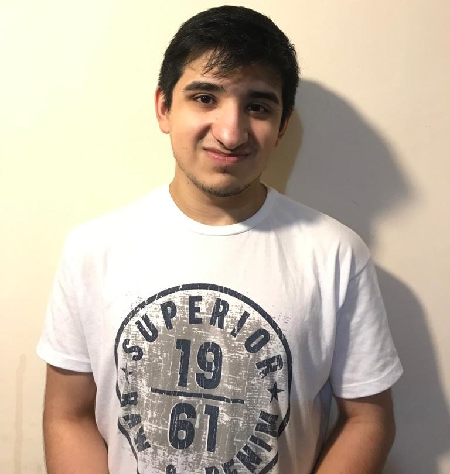

Nombre/Apellido y Carrera:
Mi nombre es Pedro Tomas De Jesus Gonzalez 22 años y soy estudiante en Tecnicatura en Desarrollo de Sofware en UADE
Estudios:
Secundario terminado en el Instituto Gobernador Fontana (Sarmiento-Chubut).
Cursos:
Curso de inicializacion en Python en Coderhouse